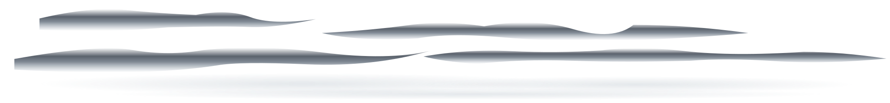
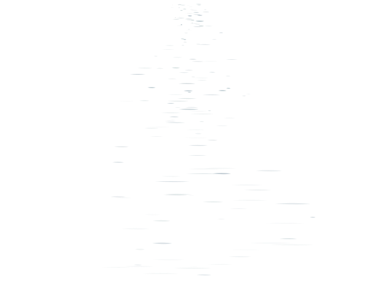
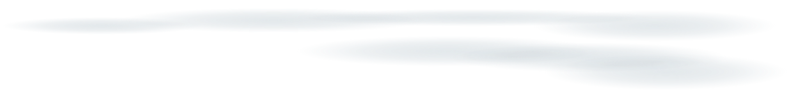
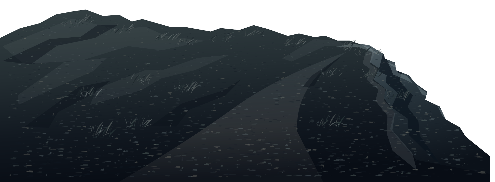
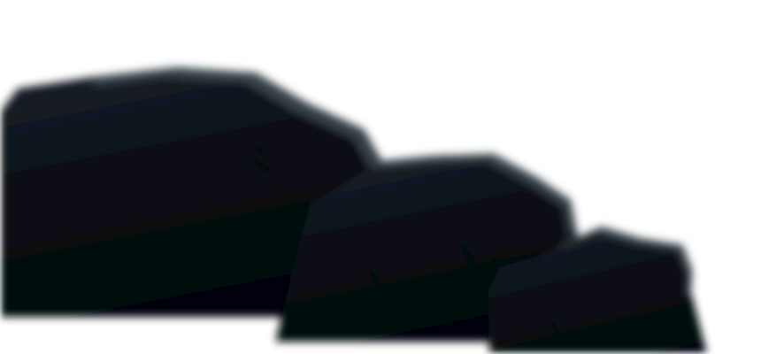

<!doctype html>
<!-- One Night, shot 1: one continuous take on the clifftop. The camera opens close behind the
     walker and follows him up the path; he slows and stops short of the edge, the camera settles,
     then pulls back smoothly to the wide view of the headland and the moonlit sea. A single rig
     drives the whole shot (data-hf-shots), so there are no cuts. All movement is evaluated on the
     local scene clock. -->
<meta charset="utf-8">
<style>
/* Independent coastal planes and full-body character cels. */
#world, .plane { width:1920px; height:1080px; position:absolute; }
img { position:absolute; object-fit:fill; }
.shimmer-a { animation: sheen-a 2.5s ease-in-out infinite; }
.shimmer-b { animation: sheen-b 2.5s ease-in-out infinite; }
@keyframes sheen-a {
  from { transform:translate(-5px,0px); opacity:.62; }
  50% { transform:translate(5px,2px); opacity:.91; }
  to { transform:translate(-5px,0px); opacity:.62; }
}
@keyframes sheen-b {
  from { transform:translate(4px,0px); opacity:.74; }
  50% { transform:translate(-4px,2px); opacity:.40; }
  to { transform:translate(4px,0px); opacity:.74; }
}
#man { position:absolute; }
.shadow { position:absolute; background:radial-gradient(ellipse farthest-side, #02060bbd, #05091060 42%, transparent 100%); }
</style>
<main data-composition-id="clifftop" data-width="1920" data-height="1080" data-duration="11" style="background:#070c15">
  <!-- Follow close (zoom 2.1) while he walks, keep following as he stops, then reveal the clifftop. -->
  <div id="world"
       data-hf-shots='[{"preset":"follow","duration":6.3,"from":{"zoom":2.1,"anchor":[0.45,0.625]},"anchor":[0.5,0.6]},{"preset":"reveal","zoom":1,"to":[0,0]}]'
       data-hf-camera-subject="man" data-hf-camera-anchor="0.45 0.625"
       data-hf-camera-lag="0.3" data-hf-camera-lookahead="0.15">
  <div class="plane" data-hf-parallax="0.12">
    
    
  </div>
  <div class="plane" data-hf-parallax="0.24">
    
    
    
    
    <div style="position:absolute;left:1090px;top:376px;width:700px;height:284px;background:radial-gradient(ellipse farthest-side at 50% 42%,#b2cce426,#92aed116 42%,transparent)"></div>
  </div>
  <div class="plane" data-hf-parallax="0.32">
    
  </div>
  <div class="plane" data-hf-parallax="1">
    
  </div>
    <!-- He walks up the path at a steady pace, decelerates over the last stride, and stops at 5.6 s.
         The cycle ends on a whole number of strides plus five cels (45 cels), matching the stance
         of the standing cel. -->
    <div id="man" style="left:1112px;top:491px;width:195.0px;height:351.5px" data-hf-keyframes='[{"at":0,"x":-110,"y":75},{"at":5.0,"x":-6.2,"y":4.2,"easing":"linear"},{"at":5.6,"x":0,"y":0,"easing":"ease-out"}]'>
    <div class="shadow" style="left:19.5px;top:330.0px;width:141.0px;height:27.5px"></div>
      
      
    </div>
  <div class="plane" data-hf-parallax="1.3">
    
  </div>
  </div>

</main>
